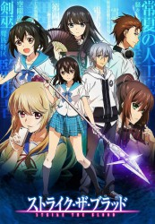

")
 
 IMDB-Wertung: 7.3 / 10
IMDB-Wertung: 7.3 / 10  Metascore:
Metascore: 
Itogami City, eine künstliche Insel weit draußen im Pazifik 300km südlich von Tokio. Hier finden mystische Gestalten wie Vampire, Werwölfe und Halb-Dämonen ein Zuhause. Unter ihnen befindet sich auch der Schüler Akatsuki Kojou. Was die Wenigsten wissen, durch eine schicksalhafte Begegnung ist er der vierte Urahn der Vampire und damit der Stärkste ihrer Art geworden. Mächtig genug, um es mit der Armee eines Landes aufzunehmen, lässt ihn die Regierung nicht unbeaufsichtigt herum laufen und beauftragt daher die junge Schwert Schamanin Himegari Yukina mit seiner Überwachung. Zusammen versuchen sie heraus zu finden, wie Kojou zu seinen Kräften gekommen ist und was aus seinem Vorgänger Kaleid Blood geworden ist.
Jahr: 2013
Dauer: 23 Minuten
FSK: 16
Land: Japan Studio: AT-XTonspuren: DD2.0 - ,
Untertitel: Deutsch,
Auflösung: 720p (1280x720) Größe: 530 MB
Genre: Action, Horror, Komödie, Fantasy, Animation/Trick, Liebe, TV-Serie
Regisseur: Hideyo Yamamoto
Drehbuch: Silver Link
Soundtrack:
Darsteller:
 Franciska Friede als
Franciska Friede als Datei: X:\HD-Anime-Serien\Strike the Blood Ep 01-24\Strike the Blood Ep 01.mkv seit 03.05.2018
Festplatte: Gemischt-01+Anime
 Es gibt insgesamt 67 Filme in der Gruppe 'HD-Anime-Serien'
Es gibt insgesamt 67 Filme in der Gruppe 'HD-Anime-Serien'